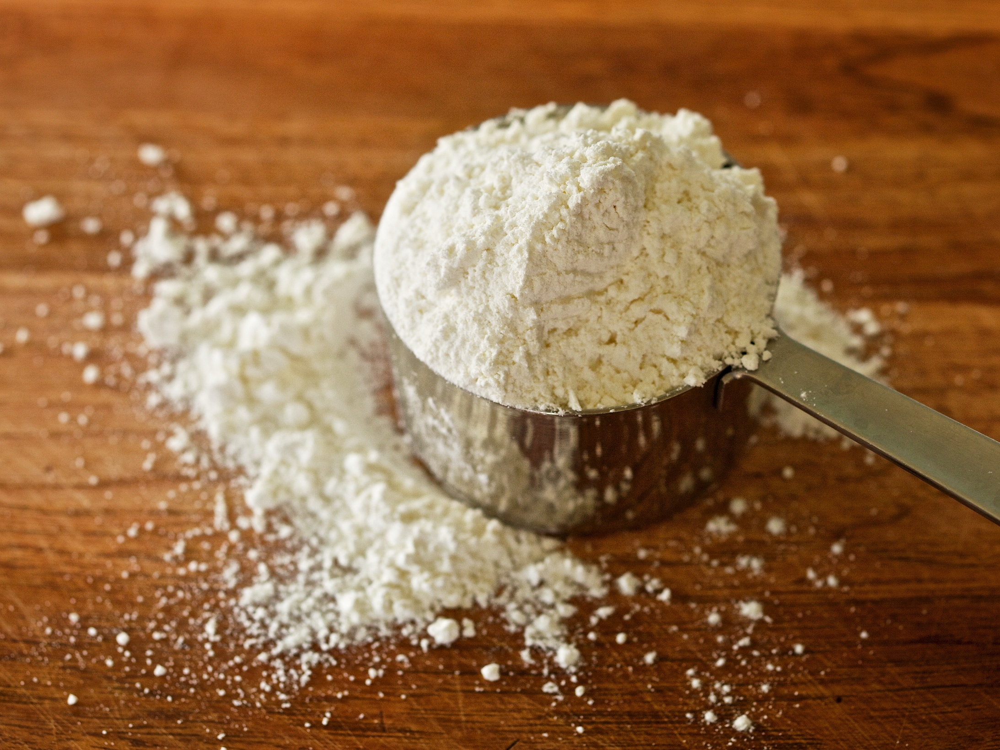

Ingredients:
- 12 eggs
- 15 tbls of sugar
- 15 tsps of oil
- 2 tbls of baking powder
- Vanilla extract
- Lemon juice
- Orange zest
- 8 cups of flour
- Powder sugar
Recipe:
- Mix ingredients in bowl and let dough sit
- Roll out dough to be thin
- Using a pastry cutter, cut dough into small strips and pinch into middle (to look like a bow)
- Heat oil in pan, fry cut dough until golden brown
- Sprinkle with powdered sugar
Farfalle History
This fried dessert is traditionally made at Christmas time. It is a simple but delicious treat that has been made for generations.